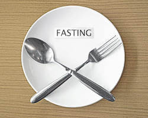

Determine Your Body Fat % With A.I. Using Only a Picture
How to Lose Weight Fast and Easy?
A. Educate Yourself (or Rather Re-Learn)
We live in a world where we are bombarded with food advertisements claiming to be ‘healthy’ and ‘good for us’. Yet in many cases, these same ‘healthy’ foods make us fat and sick.
So, how do we one-up these food companies that are simply pushing their own agenda for profits. The path towards enlightenment is through education.
I’ve probably mentioned the work of Dr. Jason Fung already on this application, and there is a good reason for it. His book The Obesity Code: Unlocking the Secrets of Weight Loss helped break many myths that had taken root in me. Here are some of the important concepts that I thought were true.
1. Calories
A calorie is not a calorie (i.e., all calories are not the same). Just try eating 1000 calories of steak for 7 days vs 1000 calories of Doritos.
They both have the same number of calories but differ greatly in the time it takes to reach satiety (feeling full) and the way they make you feel in terms of energy. The law of thermodynamics cannot be applied to the human body.
The body must make the switch from using food as an energy source to using fat reserves as an energy source. Simply eating less calories without taking into account the type of calories does not work in the long-term for fat loss.
In fact, when we do this, the body goes into starvation mode and lowers the BMR and metabolism - meaning instead of burning 2000 calories a day, your body now only burns 1700 calories a day.

To prevent this from happening, the body needs to completely deplete its dependency on carbohydrates and tap into the fat reserves to obtain energy.
The ketogenic diet helps achieve this. When we eat less calories, the BMR (basal metabolic rate or the number of calories your body burns while at rest) decreases. With the ketogenic diet, your overall BMR does not decrease, but rather it switches the source of energy to the body’s fat reserves.
This is only possible when the body has completed depleted its glycogen storage (i.e., it no longer has stored glucose or carbs). This is why you do not feel hungry on the ketogenic diet.
Fast food companies hijack the calories-in calories-out mantra for their own benefit by telling you that it's your lack of self control that is making you fat, not the type of calories in their food.
2. Vegetable Oil
Eliminate vegetable oils from your diet if you are serious about lowering your omega 6 to omega 3 ratio. A diet that is high in omega 6s usually leads to inflammation, increasing the possibility of developing many diseases.
Cook with oils from fruits such as olives, coconuts, and avocados or use butter. Among oils, I usually go for the Colvaita Extra Virgin Olive Oil - it’s both delicious and affordable.
Extra virgin olive oil is an excellent choice for people who want to lose fat. It has a relatively low percentage of saturated fat. Its high smoke point allows it to be used for cooking at high temperatures. It’s no wonder that olive oil has been a staple in Mediterranean cooking for centuries. The monounsaturated fatty acids in extra virgin olive oil (approximately 75 percent) provide additional health benefits.

They lower bad cholesterol (LDL) and increase good cholesterol (HDL). They control blood sugar levels, normalise blood clotting, and help in keeping the heart healthy. They promote a feeling of satiety and make it easier for you to stay away from snacks laden with empty calories.
Extra virgin olive oil is an especially healthy fat-loss-promoting cooking ingredient because it is unrefined and has no additives.
The lack of processing means that extra virgin olive oil contains a higher concentration of essential minerals and vitamins.
And as a bonus, the high vitamin E content will work wonders for your skin. The antioxidants in this oil attack free radicals in the blood which are associated with the effects of aging and certain cancers.
3. Grains
Eliminate grains from your diet. If you are prone to irritable bowel syndrome and suffer from diarrhea, bloating, and constipation, you may find instant relief. Read Wheat Belly by William Davis which talks in detail about why wheat is possibly one of the worst foods you can consume.
A cardiologist by profession, Dr. Davis found that eating grains for breakfast (bagels, toast, waffles) often made him feel lethargic and tired. He started experimenting with a wheat-free diet on patients who were overweight and at high risk for developing diabetes.
He asked them to substitute grains with low-glycemic-index foods for 3 months. To his surprise, Dr. Davis found that the majority of patients who participated in the experiment lost a significant amount of weight and had better blood sugar levels.

They also reported feeling more energetic and having better focus at work and school.
In addition, they reported more restful sleep and better bowel health. In his bestselling book, Dr. Davis recommends replacing bread, pasta, cereal, wheat, rye, and certain oats with vegetables, less sugary fruits like apples and oranges, meat and eggs, cheese, yogurt, milk, soy, olives, avocados, and raw seeds and nuts.
Transitioning off wheat can feel intimidating, but its doable, and limited quantities of quinoa, chia, and millet can be consumed. In terms of alcohol, Dr. Davis strongly recommends staying off beers and choosing a glass of red wine instead for its heart-healthy properties.
4. Snacks
Stop snacking completely. The idea that you need to constantly eat to keep your metabolism going has never been proven.
On the other hand, constant snacking can lead to insulin resistance as the body is constantly pumped with food. In ancient times, humans typically ate one meal a day and it was only when the industrial revolution happened that the idea of three meals a day was floated to sustain manual labourers.
In the modern day, eating outside of mealtimes, constantly snacking, and erratic eating patterns mean that human beings are in a “fed state” for a large proportion of the day. The post-meal state triggers an immune response in the body and constant snacking can put the immune system under a great deal of physiological stress.
This low-grade inflammation can result in a number of diseases as well as drive the body towards early aging.
Snacking late at night has been linked to elevated levels of glucose and cholesterol, insulin resistance, and a feeling of hunger the following day.
Mindless snacking can easily take you over the recommended caloric intake for the day while providing minimal to zero nutritional value. Careless and frequent snacking is also associated with a higher incidence of tooth decay.
If you tend to snack out of boredom, stress, or just bad habit, make an effort to stop right away. Sugary treats should be reserved for special occasions. And when the hunger pangs strike away from mealtimes, substitute carbohydrate-rich snacks with nutrient- and fiber-rich ones that are satiating.
A handful of almonds has about half the calories of a dozen pretzel twists and about 4 times the fiber as well as dozens of minerals, vitamins, and antioxidants. Choosing wisely and becoming mindful of your snacking habits will go a long way in helping you progress on your journey towards a healthy fat percentage.
5. Dietary Fat
Remember, saturated fat in your diet does not make you fat or clog your arteries. In fact, fat is an important source of energy for the body and a critical component of a healthy balanced diet. Fat has several important functions in human nutrition. It helps in the absorption of vitamins and minerals. It is a necessary ingredient for cell membranes and nerve sheaths.
It is essential for healthy muscles and blood clotting. It prevents inflammation. However, some fats are good for us while others are not. Trans-fats (solid margarine and vegetable shortening) have no health benefits and should be avoided altogether (in fact, they are banned in the United States).

Saturated fats, such as those found in red meat, full-fat milk, and cheese, are common in our diets.
If consumed in excess, they can drive up the cholesterol levels in the body and clog the arteries. It is recommended that less than 10 percent of the daily caloric intake should come from saturated fats. On the other hand, monounsaturated and polyunsaturated fats are good for us.
These are found in nuts, seeds, fruits, and fish. They are liquid at room temperature. Olive oil contains mostly monounsaturated fats.
Studies have shown that people living in Mediterranean countries have a low incidence of heart disease despite a seemingly high-fat diet. This is because most of the fats they consume are not saturated animal fats but rather monounsaturated fat such as that found in olive oil.
6. Sleep
Getting a good night's sleep is essential in keeping appetite under control and preventing cravings for high-starch foods. When the human body is sleep deprived, there is increased production of the stress hormone cortisol.
This triggers the reward center in the brain and increases food cravings. People who don’t get enough sleep also tend to over-produce the hunger hormone ghrelin and the satiety hormone leptin, making them more susceptible to overeating and feeling less satiated after meals.
Adequate sleep is also necessary because it is during sleep that the body produces growth hormone.
This hormone burns fat and repairs and builds muscles, thereby improving strength and allowing you to work out more efficiently. Lack of sleep can lead to cravings for salty and sugary foods and unhealthy late-night snacking habits.
If you are in a state of sleep-deprived exhaustion, your mental clarity is less than optimal and your will power is probably at its lowest, making it more likely that you will reach for that forbidden donut rather than a piece of fruit. There are several ways to promote restful sleep.
Consistent sleep/wake times, avoiding caffeine later in the day, reducing daytime naps, and sleeping in a quiet dark room are all known to help.
7. Stress
Reduce daily stress to lose the fat. Find a healthy way to blow off steam. Something like working out, reading, participating in an outdoor activity, or playing a musical instrument. If you leave the stress unaddressed, you are at greater risk of stress eating.
This type of emotional eating not only contributes to excess calories but also frequently consists of unhealthy foods that cause the body’s fat percentage to creep into the unhealthy range. Stress leads to high levels of cortisol hormone in the body.

This hormone is known to promote body fat and make it extremely difficult to get rid of extra weight, especially belly fat.
This is because cortisol tells the body to conserve energy even though the body hasn’t used many calories. Chronic stress and the secretion of cortisol is part of a feedback loop that has been found to slow down fat metabolism and make fat loss difficult.
The only way to break out of this vicious cycle is to manage chronic stress.
Studies show that people who undergo some sort of stress management program along with healthy lifestyle efforts with diet and exercise are more likely to achieve a reduction in BMI compared to people who simply make changes in lifestyle without participating in stress management.
8. Fasting
Incorporate fasting in your overall weight loss plan as a way to boost your immune system, accelerate your fat loss, and improve your skin. It has worked wonders for me and I know it will for you as well.
Fasting is a scientifically-backed method of burning fat and it has been around since ancient times. For one, it is a great way to reverse insulin resistance and get rid of the stubborn weight that just refuses to go.
Fasting is also known to protect against a number of diseases, such as Alzheimer’s, Parkinson’s, liver disease, heart conditions, and cancer.
It kickstarts the immune system and provides a boost to metabolism. Fasting leads to a natural increase in the secretion of growth hormone, leading to a more energetic state that promotes an efficient exercise session.

Temporarily restricting food intake helps put the hormones back in balance. It forces the body to tap into fat reserves to function normally. The body moves from a sugar-burning mode to a fat-burning mode.
Sugar, which is stored as glycogen in the liver and muscles, is the easiest source of energy for the body. Once this is depleted, the fasting body moves to obtaining energy from fat stores. And this is good news for people who are aiming for a healthier fat percentage.
B. Focus on Building Good Habits
Fat loss is a long-term commitment, and therefore, you need a long-term solution that is sustainable. You can achieve this by building good habits that can help you achieve your goal. This takes dedication but is worth the effort.
‘Building a habit only takes 21 days’ is a common myth that almost everyone thinks is true. Habits take anywhere from two months to eight months to form.
Therefore, you need to have a realistic timeframe when it comes to achieving your weight loss goals as this will require you to form several good habits. Here are a few habits that can help you achieve your goals:
1. Water

Drink water everyday. Drinking more water has been shown to burn more calories. Keeping a water bottle beside your bed, desk, or on hand when travelling is an easy way to build this habit, save money, and lose fat as a by-product.
2. Preparing Meals in Advance

Prepare your meals in advance to avoid any unnecessary temptation to order restaurant food when you are tired after work or school.
3. Eliminate Junk Food

Throw out ALL unhealthy foods from your home. This might sound drastic, but if there are no chips, ice cream, or cookies in your kitchen, there is no junk food for you to eat.
If you do feel the need to occasionally eat junk food, eat it when you’re outside your home and do not store any at home. This way you can start afresh after a cheat day and not have any temptation derailing your diet.
4. Drink Bone Broth

Drink bone broth as part of your diet. It helps strengthen the heart, aids in muscle growth, and contains essential electrolytes such as calcium and magnesium that can easily be absorbed through the gut.
5. Reduce Social Media

Reduce your dependence on social media. Yes, I know you’re wondering what this has to do with losing fat! Well, you need a clear and uncluttered mind to take on the huge challenge of losing fat. This will be difficult if you are in a depressed, lonely or anxious state - which social media has been shown to increase. To get a healthy body, you first need a healthy mind.
C. Take Things Slow
Fat loss is a long-term game, so don’t play it with a short-term mindset? Taking things slow, especially at first, will help you learn more about yourself. The path to becoming the best version of yourself mentally and physically is a slow and steady one. Here are some tips to help:
1. Start Mediating

Meditation is a great tool to develop the mental fortitude necessary to handle the ups and downs that are likely to occur during your fat loss journey.
Not only that, meditation will help you focus more intensely and be more creative. Practical Meditation for Beginners is great guide for novices.
2. Start Reading

Reading might not seem like a vital cog in the fat-loss wheel, but hear me out. Having a healthy body without a healthy mind is useless. Just as you work on your body, the mind also needs its own fuel – and reading is that fuel.
Not only do you learn from the mistakes of others but you also learn what works and how you can put that to your benefit. For those that hate reading, consider starting out with audiobooks. It might take longer to complete, but if it helps you get started with books, go for it. Get two free audiobooks from Audible when you sign up.
3. Eliminate Addictions
Probably much easier said than done, but to be the best version of yourself, you must get your act together.
You might not even be aware that you have an addiction until you reflect on how social media, television, junk food, alcohol, drugs or relationships influence your life. This type of reflection can identify problematic patterns in your behaviour that need to be worked on.
Once they are identified, seek help from those that have overcome similar issues or read books that address a particular addiction.
One of my biggest crutches were cigarettes, and eliminating this addiction set me firmly on the path towards a healthier life. If you are interested in exploring this further, read The Easy Way to Quit Smoking by Alan Carr which helped me beat my cigarette addiction.
4. Find What Works for You
None of what I’ve written above matters if it doesn’t work for you. Create your own path and stay accountable to it. I’ll admit I struggle with this myself. But knowing that the journey is a long one helps prepare for it mentally.
On the other hand, there is no point in going to extreme lengths to achieve your goals when you know that three months from now you’ll be back to your old ways.
Find something that works that you can easily see yourself doing 10 years from now.
Disclaimer
The content on this site is for information purposes only. I (Bruce Rebello) am a licensed industrial engineer in the province of Ontario, Canada, with no medical training whatsoever. None of website content is meant to be taken as medical advice.
All I have done on this site is aggregate information that I think is beneficial. Speak to your healthcare professional for medical advice and read the book I mentioned in the resources section that is written by a healthcare professional.
I or the company that owns this web app will not be held liable for any claim, damage or other liability arising from, out, or in connection with using this web application and its content.
As a way of generating revenue to sustain this web app, estimatebodyfat.com is a member of Amazon’s Affiliate program and may earn a commission if you decide to buy any of the products recommended on this website through Amazon.